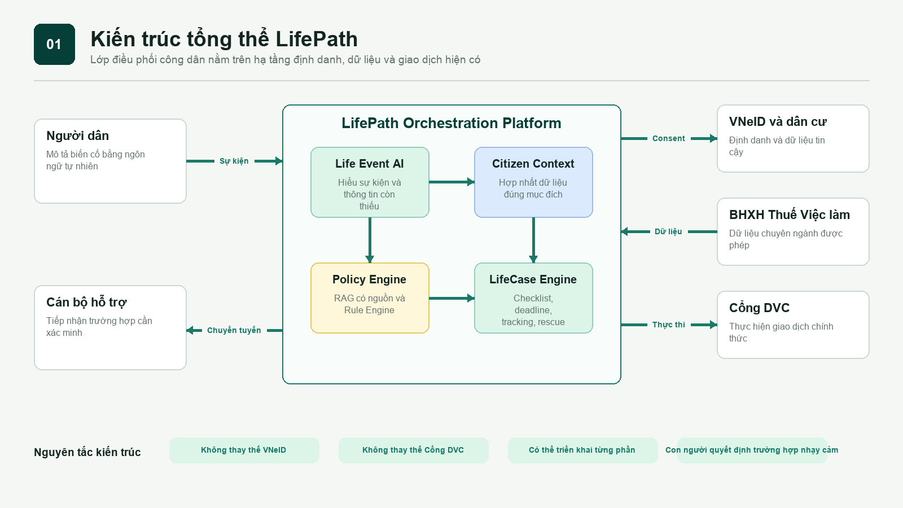
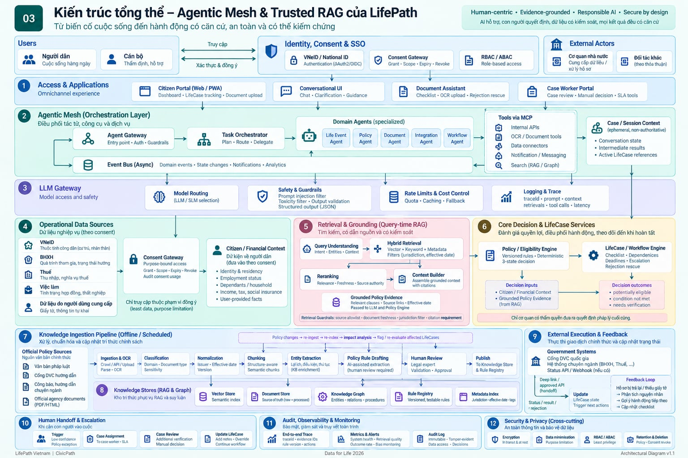
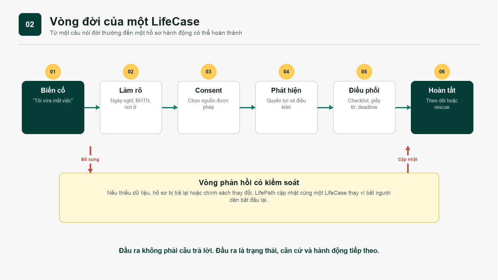
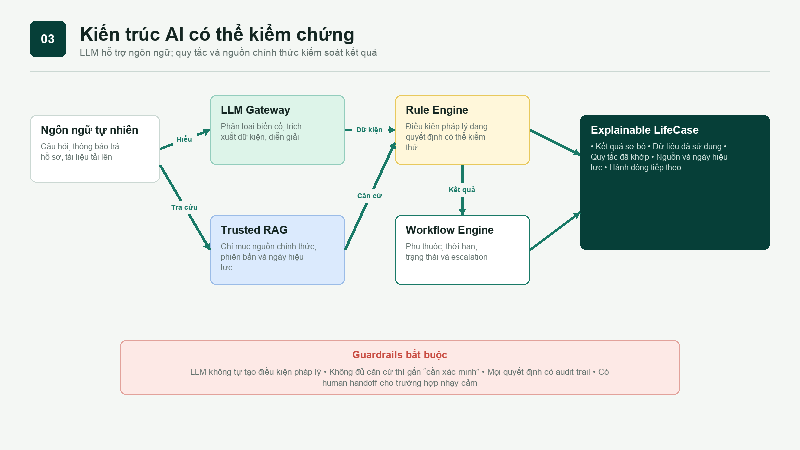
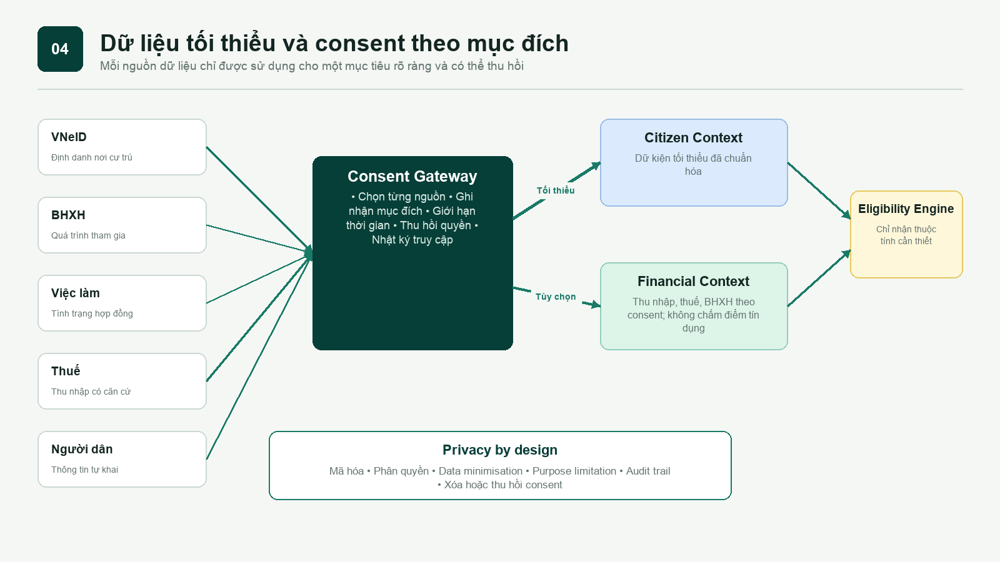
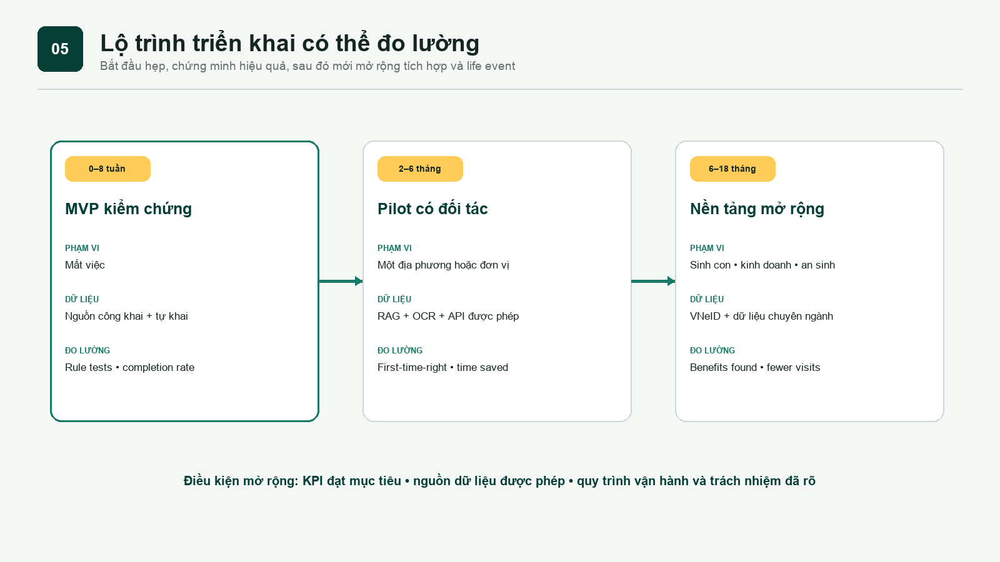

AI hiểu ngôn ngữ
LLM phân loại biến cố, trích xuất dữ kiện và diễn giải kết quả. LLM không tự tạo điều kiện pháp lý.
TECHNOLOGY & TRUST DOSSIER
LifePath kết hợp AI ngôn ngữ, nguồn chính thức, quy tắc xác định và workflow có trạng thái để biến một biến cố cuộc sống thành hành động có thể hoàn thành.
Phiên bản hiện tại dùng dữ liệu mô phỏng và rule engine cục bộ. Chưa kết nối VNeID, BHXH, thuế hoặc hệ thống cơ quan nhà nước.
TRANSPARENT MVPLLM phân loại biến cố, trích xuất dữ kiện và diễn giải kết quả. LLM không tự tạo điều kiện pháp lý.
Điều kiện và deadline được mô hình hóa thành quy tắc có phiên bản, có thể kiểm thử và truy vết.
Trường hợp thiếu căn cứ hoặc nhạy cảm được gắn cần xác minh và chuyển cho cán bộ phù hợp.
TARGET EXPERIENCE
Video ngắn minh họa cách LifePath tiếp nhận việc chấm dứt hợp đồng, xin consent, phát hiện quyền lợi và tạo các bước tiếp theo.
Phạm vi: Đây là video mô phỏng trải nghiệm mục tiêu. Prototype hiện dùng dữ liệu mô phỏng và chưa kết nối các hệ thống nhà nước.
SYSTEM DESIGN
LifePath không thay thế hạ tầng hiện có. Nền tảng hiểu hoàn cảnh, phối hợp dữ liệu được cho phép và chuyển người dân tới kênh thực thi chính thức.

TARGET ARCHITECTURE
Các agent chuyên biệt điều phối tác vụ; Trusted RAG chỉ tạo căn cứ từ nguồn được kiểm soát; Rule Engine đánh giá điều kiện; con người và cơ quan có thẩm quyền giữ quyền quyết định cuối cùng.

Pilot: các agent được triển khai như module logic trong modular monolith.
Mở rộng: chỉ tách service khi tải, quyền sở hữu dữ liệu hoặc yêu cầu an toàn đòi hỏi.
FROM EVENT TO OUTCOME

RESPONSIBLE AI
Kiến trúc hybrid giữ sự linh hoạt của AI nhưng đặt quyết định pháp lý trong thành phần có thể kiểm thử và audit.

Mỗi kết quả có nguồn, ngày hiệu lực, dữ liệu đã dùng và quy tắc đã khớp.
Không đủ căn cứ thì không kết luận; hệ thống nêu thông tin cần bổ sung hoặc chuyển xác minh.
Chính sách và quy tắc có phiên bản để biết kết quả được tạo theo quy định nào.
Cán bộ xử lý ngoại lệ thay vì để mô hình ngôn ngữ suy đoán.
DATA GOVERNANCE

DELIVERY ROADMAP
